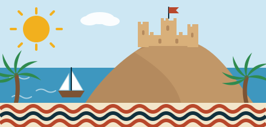

Tiempo
8:00
0 bien
0 mal
22 faltan
Alicante · 4.º de Primaria

Los arqueólogos excavan y estudian objetos antiguos para saber cómo vivía la gente.
Letras A · C · G · YDocumentos, edificios, objetos y recuerdos nos cuentan lo que pasó.
Letras F · VLos siglos y las épocas ayudan a colocar cada hecho en una línea del tiempo.
Letras S · L · R · IMuseos, castillos, fiestas y tradiciones son una herencia que debemos cuidar.
Letras B · D · E · H · P · T · U